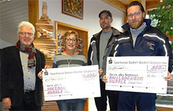
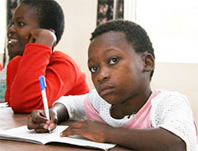
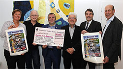
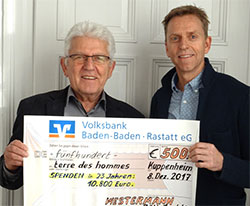

|
Donnerstag, 21. Dezember 2017 |
5.500 Euro für Straßenkinder in Simbabwe
Handwerkliche Tätigkeiten vermitteln |
|
|
 |
| Heinz Wolf (terre des hommes), Ulrike Dinger, Simon Baumann (Holzbau Hurrle) und Jens Tschirner (l Hurrle) bei der 18. Spendenübergabe (Foto: terre des hommes). |
Bereits seit 18 Jahren spenden die beiden Gaggenauer Firmen Holz- und Rollladenbau Hurrle für nachhaltige Projekte von terre des hommes, anstatt Weihnachtgeschenke an die Kunden zu verteilen. Zum Jahresende erhöhten sie den jährlichen Betrag auf 1.500 Euro. Insgesamt kamen auf diese Weise 21.500 Euro zusammen. Mehrere hundert Kinder konnten dadurch Hilfe in Form von Schule und Bildung, Medizin und Trauma-Hilfe, Nahrung und Kleidung erhalten.
Darüber hinaus schloss sich die Joachim Dinger GmbH mit 1.000 Euro der Beispiel gebenden Aktion an. Auch die Fa. Reinhard Melcher aus Ettlingen, die in den zurück liegenden Jahren terre des hommes 12.000 Euro zukommen ließ, spendete wiederholt 2.000 Euro. Die Glühweinaktion von Guntram Fahrners „Weinlade am Gutenbergplatz“ aus Karlsruhe erbrachte 1.000 Euro, wobei sich dessen Spendenkonto auf 7.000 Euro erhöhte.
Letzte Chance am Ende der Straße: Es ist Mittagszeit in Bulawayo, der zweitgrößten Stadt Simbabwes. Dutzende Kinder und Jugendliche in abgetragener, schmutziger Kleidung drängeln sich vor dem Zentrum »Thuthuka«. Sie wollen sich waschen oder die Kleidung wechseln. Einige von ihnen ziehen danach wieder auf die Straße, andere bleiben, um zu lernen. Viele Kinder und Jugendliche haben ihre Eltern durch HIV/Aids verloren. Ohne Ausbildung und Zukunftsperspektiven führt ihr Weg schnell in die Kriminalität.
Für Ziele begeistern: Die fünf Sponsoren legen Wert darauf, dass der diesjährige Spendenbetrag einem Projekt in Simbabwe zu Gute kommt. „terre des hommes“ ist dort seit Jahrzehnten engagiert und hofft, dass sich das geschundene südostafrikanische Land nach Mugabes Rücktritt von der Macht wirtschaftlich stabilisiert und demokratische Reformen eingeleitet werden. Ein Viertel aller Straßenkinder in Simbabwe haben nie eine Schule besucht. Alle leiden Hunger oder sind mangelernährt. Viele haben Erfahrung mit Drogen gemacht. Die große Mehrheit empfindet das Leben auf der Straße als hoffnungslos. Die eigentliche Herausforderung ist, die Kinder von ihrem ziellosen Leben abzubringen und sie für die Schule oder eine Ausbildung zu begeistern.
Große Fähigkeiten vorhanden: In dem Projekt Thuthuka erhalten jährlich 30 Jungen und Mädchen (400 Kinder seit 1995) eine handwerkliche Ausbildung. Viele Straßenkinder haben zwar Schwierigkeiten mit den Schulbuchinhalten, doch handwerkliche Fähigkeiten, wie kochen, schreinern oder schweißen, lernen sie innerhalb weniger Monate. Auch die gesundheitliche Aufklärung und Hilfen bei Problemen mit Behörden stehen auf dem täglichen Stundenplan. Hoch im Kurs stehen Angebote rund um die Computertechnik. Das Projekt hat so vielen Jugendlichen die Rückkehr in die Familien oder ein eigenständiges Leben in Würde ermöglicht.
|
Donnerstag, 21. Dezember 2017 |
„terre des hommes"-Benefizkonzert erspielt 11.000 Euro für Straßenmädchen |
|
|
 |
| Kooperation für die gute Sache: Ute Acri (Kulturamt der Stadt Gaggenau), Peter Götzmann (Musikschule Gaggenau), Mahmut Pervaneli (Vertreter "Türkischer Schul-Elternverein" e. V.), Heinz Wolf („terre des hommes Murgtal/Mittelbaden"), Oberbürgermeister Christof Florus und Dr. Robert Scharff (Kulturring Gaggenau) (v.l.n.r.). (Foto Presseamt Stadt Gaggenau) |
„500 Zuhörer waren begeistert von der Qualität des Konzerts, und mit dem sensationellen Erlös aus der Veranstaltung in Höhe von 11.000 Euro kann terre des hommes 185 Straßenmädchen in der Stadt Davao auf Mindanao (Philippinen) Schulbildung und soziale Betreuung zukommen lassen", so Heinz Wolf, Organisator des Benefizkonzerts. Neben der Sparkasse Baden-Baden Gaggenau in ihrer Funktion als langjähriger Hauptsponsor trugen 42 Sponsoren aus Gaggenau, Kuppenheim und Umgebung sowie der "Türkische Schul-Elternverein" mit seinen orientalischen Leckerbissen zum Erfolg der Veranstaltung bei. Peter Götzmann, verantwortlich für das musikalische Konzept, war angetan von der Offenheit des Publikums in der Jahnhalle Gaggenau, was die Musiker veranlasste, bereits jetzt ihre Zusage für das nächste
Weltkonzert am 13. Oktober 2018 in der Jahnhalle zu geben. Mahmut Pervaneli ging auf die nachhaltige Arbeit von terre des hommes ein, die der „Türkische Schul-Elternverein" gerne unterstütze.
Für Dr. Robert Scharff ist eine Kooperation angesagt, wenn das Konzert zum Veranstaltungsprogramm des Kulturrings Gaggenau passt. Seit vielen Jahren arbeitet das Kulturamt der Stadt Gaggenau mit „terre des hommes Murgtal/Mittelbaden" zusammen. „Mit Ausstellungen, Konzerten, Lesungen und anderem können wir die Kultur in Gaggenau bereichern und für notleidende Kinder Hilfe leisten", so Ute Acri. Oberbürgermeister Christof Florus schätzt die interkommunale Kooperation als sehr wertvoll ein und hob hervor, dass die Arbeitsgruppe „terre des hommes Murgtal/Mittelbaden" in den vergangenen 40 Jahren mit 3,3 Millionen Euro Spenden und Aktionserlösen 60.000 Kinder und Jugendliche unterstützen konnte.
Gaggenauer Woche vom 21.12.2017
|
Samstag, 16. Dezember 2017 |
Unterstützung für die Rohingya in Bangladesch
„terre des hommes“ leistet mit einheimischen Kräften wirksame Hilfe |
|
Die Arbeitsgruppe “terre des hommes Murgtal/Mittelbaden" bittet um Spenden für die Rohingya. Der Appell geht auch an die vielen Myanmar-Touristen aus der Region, die das wunderbare Land besucht haben. 620 000 Menschen der Rohingya sind seit August aus Myanmar in das benachbarte Bangladesch geflohen. Die muslimischen Rohingya aus dem vorwiegend buddhistischen Myanmar werden verfolgt und sind auf der Flucht vor Exekutionen, Mord an Kindern, Vergewaltigungen und gewalttätigen Übergriffen. Zwei Drittel von ihnen sind Kinder.
Die beiden benachbarten Länder haben dieser Tage beschlossen, die muslimische Minderheit wieder in ihre alte Heimat zurückzuführen. Unklar ist jedoch, wie dies geschehen soll. Mehrere hundert ihrer Dörfer wurden niedergebrannt. Der Hass und die Gewaltbereitschaft vonseiten der angeblich friedfertigen Buddhisten und des Militärs ist noch allgegenwärtig. Aus diesem Grund ist die Hilfe der Nichtregierungsorganisationen noch lange notwendig, „terre des hommes" hat einheimische Partner im Grenzgebiet von Bangladesch und Myanmar und leistet dort den Geflüchteten wirksame Unterstützung.
In der grenznahen Küstenstadt Cox’s Bazar sind die Flüchtlingscamps heillos überfüllt, die Menschen leben zusammengepfercht auf engstem Raum in Zelten oder schutzlos unter Plastikplanen auf den Straßen am Rande der Camps. Viele Flüchtlinge sind durch Kämpfe oder Misshandlungen verletzt, fast alle sind nach Gewaltmärschen durch unwegsames Gelände und das Durchqueren gefährlicher Wege und Gewässer am Ende ihrer Kräfte. Die sanitären Verhältnisse in den Camps sind katastrophal; es wird befürchtet, dass jederzeit Seuchen wie Cholera ausbrechen können. Die anhaltenden Regenfälle verschlimmern die Situation in Bangladesch, das sich selbst noch nicht von den heftigen Überflutungen durch den Monsun im August erholt hat. Die örtlichen Behörden sind mit der Versorgung der Rohingya überfordert, die Regierung hat um internationale Hilfe gebeten.
Hilfe für 30.000 Flüchtlinge
„terre des hommes“ hat über die Schweizer Schwesterorganisation in Lausanne Hilfe für die Betroffenen organisiert und plant in Cox‘s Bazar Unterstützung für 30.000 Flüchtlinge. Sie erhalten feste und wasserabweisende Unterkünfte sowie sauberes Trinkwasser und dringend benötigte Hygieneartikel. Mehr als die Hälfte der Rohingya-Flüchtlinge sind Kinder, von denen viele durch und Flucht und Vertreibung traumatisiert sind. Ihnen und vor allem den über 1.000 Minderjährigen, die ohne ihre Eltern oder Verwandten nach Bangladesch geflohen sind, gilt bei den Hilfsmaßnahmen die besondere Aufmerksamkeit. Auf sich allein gestellte Kinder sind in den unübersichtlichen Camps besonderen Risiken ausgesetzt: immer wieder „verschwinden“ Kinder oder werden gekidnappt und als Arbeitssklaven oder sexuell missbraucht. Mitarbeiterinnen und Partnerorganisationen von terre des hommes betreuen diese Kinder in geschützten Räumen, bieten ihnen Gelegenheit zu spielen, sorgen für ihr Wohl und helfen bei der Suche nach Verwandten.
Ein Platz für die Rohingya
In ihrer Heimat Myanmar, wo sie vor etwa 1000 Jahren als deportierte oder geflohene Bengalen zum Islam konvertierten, werden die Rohingya als illegale Einwanderer betrachtet, haben keinen Anspruch auf die myanmarische Staatsbürgerschaft und werden häufig von radikalen Buddhisten angegriffen. Bereits 1948 (nach der Gründung des Staates Myanamar) brachten Militäroperationen der ethnischen Minderheit vielfachen Tod, Verwüstung ihrer Siedlungsgebiete und systematische Zerstörung der Infrastruktur. Für mehr als eine Million ist deshalb nach den neusten Gräueltaten die Flucht in die asiatischen Nachbarländer der einzige Ausweg. Zahlreiche Rohingya sind auch in den Aufnahmelagern der indonesischen Provinz Aceh gestrandet.
„terre des hommes“ hat hier zusammen mit dem CMC (Children Media Center) ein Hilfsprogramm ins Leben gerufen: Rund 300 Flüchtlinge, zwei Drittel davon Kinder, werden mit gesundem Essen und sauberem Wasser versorgt. Die geschwächten und verängstigten Mädchen und Jungen finden Sicherheit und können spielen, um die Erlebnisse zu verarbeiten.
Die Arbeitsgruppe „terre des hommes Murgtal/Mittelbaden“ bittet um Spenden für die Rohingya. Der Appell geht auch an die vielen Myanmar-Touristen aus der Region, die das wunderbare Land besucht haben und an die Zuhörer der Multivisionsschau (Kulturring Gaggenau) von Andreas Pröve zu Myanmar, bei dem viele schöne Bilder gezeigt, die Problematik der Flüchtlinge jedoch nur am Rande gestreift wurde.
Ihre Spende "Rohingya"
Sparkasse Baden-Baden / Gaggenau
IBAN: DE40 6625 0030 0000 1207 90
BIC: SOLADES1BAD
Volksbank Osnabrück
IBAN: DE20 2659 0025 0700 8007 00
BIC: GENODEF1OSV
|
Samstag, 16. Dezember 2017 |
Beim Spendensammeln ganz weit vorn
Arbeitsgruppe Murgtal/Mittelbaden seit 40 Jahren in der Region aktiv |
|
Die Hilfeorganisation Terre des Hommes (TdH) wurde vor 50 Jahren in Stuttgart gegründet, vor 40 Jahren hatten der Oberndorfer Heinz Wolf und seine Frau Anne die Idee, eine Arbeitsgruppe ins Leben zu rufen. Die erste Aktion war eine Plakatausstellung im Kuppenheimer Feuerwehrgerätehaus am 18. Dezember 1977. Seither hat die rührige Arbeitsgruppe Murgtal/Mittelbaden bei 350 Aktionen und Aktivitäten den stolzen Betrag von mehr als 3,3 Millionen Euro für Projekte in Asien, Afrika und Lateinamerika gesammelt. „Wir konnten damit rund 60 000 Jungen und Mädchen helfen", bilanziert Wolf.
Zunächst waren die Aktivitäten in den SPD-Ortsvereinen Bischweier und Kuppenheim verankert, doch nachdem sich ein Freundeskreis gebildet hatte, wurde die Arbeit in einer eigenständigen Gruppe geleistet. „Wir sind damals auf viel mehr Interesse an unserer Arbeit gestoßen als heute, die Leute wollten mehr über die Hilfsprojekte wissen", blickt Wolfgang Deppisch, ein Mistreiter seit 1979, im BT-Gespräch zurück. Teilweise habe es an den Infoständen „intensive Diskussionen" über Sinn und Zweck von Entwicklungshilfeprojekten gegeben.
Zu den Aushängeschildern der Arbeitsgruppe gehörten die Basare in Kuppenheim. Der erste fand 1979 laut Deppisch „in sehr kleinem Rahmen" im alten Kindergarten statt. Zuletzt kamen zu den Basaren in der Wörtelhalle im Schnitt 2 500 Besucher, bis zu 100 Helfer wurden gebraucht. „Wir wollten nicht nur Kuchen und Basteleien anbieten, sondern auch Programm mit Musik und einem Angebot für die Kinder", verdeutlicht Wolf. Mit den Jahren nahm die Konkurrenz an Basaren jedoch zu und auch mit der Hallenbelegung sei es immer schwieriger geworden. So habe man 2014 beschlossen, mit den Basaren aufzuhören, die in all den Jahren Erlöse von etwa 25 000 Euro erbrachten.
Ein weiteres „Markenzeichen" der TdH-Arbeitsgruppe waren die Kinderfeste in der Kuppenheimer Realschule. .Anfangs hatten wir nur Konzerte, dann gab es immer mehr Programm", blickt Heinz Wolf zurück. 1988 fand das erste Fest statt, 25 weitere sollten folgen, bis auch dieses Angebot eingestellt wurde: „Die Kinderfeste waren immer mit einem großen Aufwand verbunden. Nachdem einige Helfer und auch etliche unserer Kinder, die uns mittlerweile geholfen hatten, weggezogen waren, beschlossen wir, damit aufzuhören. Auch wegen brandschutzrechtlicher Auflagen in der Realschule waren die Feste in der bisherigen Form nicht möglich", bedauert Heinz Wolf.
Eine Tradition hat aber nach wie vor Bestand: Die Radbörse. Klaus Kastner vom gleichnamigen Fahnradgeschäft kam 1990 auf die Arbeitsgruppe zu. Er hatte die Idee, bei der Börse seine und gespendete Fahrräder anzubieten, was auf Zustimmung stieß. Die Sparkasse beteiligt sich an den Kosten und die Radsportfreunde Kuppenheim unterstützen mit einem zehnköpfigen Helferteam die gute Sache. Didi Biedermann von der TdH-Arbeitsgruppe kümmert sich hauptverantwortlich um die Organisation der Radbörse.
Daneben ist die Arbeitsgruppe nach wie vor eifrig dabei, Konzerte zu organisieren. 74 an der Zahl waren es in den vergangenen Jahrzehnten. Mittlerweile finden zwei bis drei Konzerte pro Jahr statt, bei denen ein durchschnittlicher Erlös von 3 500 bis 5 000 Euro erzielt wird, berichtet Wolf.
Die Terre-des-Hommes-Arbeitsgruppe Murgtal/Mittelbaden beteiligte sich etwa 50-mal an Festen oder Jahrmärkten und lud zu 40 Info-Veranstaltungen ein, unter anderem in Schulen.
Heinz Wolf hat in den vergangenen Jahrzehnten ein Firmen-Sponsoring aufgebaut, bei dem er auf 80 Sponsoren zurückgreifen kann, die jährlich rund 20 000 Euro für Projekte spenden. Die Pressearbeit ist ein weiteres wichtiges Standbein der TdH-Arbeit: „Es ist wichtig, dass die Leute erfahren, wofür eine Veranstaltung stattfindet", verdeutlicht Deppisch. Daneben werden Flyer ausgelegt oder Infopost an bekannte Adressen versendet. Früher marschierten die TdH- Mitstreiter noch durch die Straßen und verteilten sie in Briefkästen, erinnert sich Wolf.
Veranstaltungen sind ein weiteres Standbein der TdH- Arbeit, bilanziert Wolf, der gleichzeitig betont, dass sämtliche Einnahmen in die Projekte fließen. Mit diesem Bündel an Aktivitäten hat es die Arbeitsgruppe geschafft, dass sie seit vielen Jahren bundesweit Spitzenreiter im Spendenaufkommen ist: „Nur wenn die Stuttgarter Arbeitsgruppe alle zwei Jahre ihren Kunstmarkt macht, landen wir auf Platz zwei", berichtet Wolf nicht ohne Stolz.
Das Trio, das zum „harten Kern" von zehn Aktiven gehört, ist nach wie vor gewillt, weiterzumachen. Wolfgang Deppisch: „Die Projekte, die Terre des Hommes in Angriff nimmt, sind gut durchdacht. Mich überzeugt der umfassende Ansatz, dass mittel- bis langfristige Projekte entwickelt werden." Didi Biedermann ist seit Anfang der 1980er-Jahre dabei: „Für mich ist ganz wichtig, dass die Projekte von den Leuten vor Ort gemacht und evaluiert werden. TdH arbeitet auch mit anderen Organisationen zusammen." Für Heinz Wolf zählt, dass TdH nicht nur die Politik vor Ort beeinflusst, sondern beispielsweise auch das Ministerium für Entwicklungshilfe berät: „Terre des Hommes hat die Initiative eingebracht, dass Sextouristen in Südostasien nach deutschem Recht bestraft werden."
Aktuell sammelt die Arbeitsgruppe Gelder für ein Rohingya-Projekt. Auf dem Kuppenheimer Weihnachtsmarkt am 16. und 17. Dezember werden an einigen Ständen Spendenbüchsen aufgestellt.
Vier Jahrzehnte ehrenamtliches Engagement ist beachtlich, doch die Arbeitsgruppe möchte; nicht sich selbst feiern, sagt Heinz Wolf. Aber beim Konzert von „King Henry And Friends" am 25. März 2018 in der Kuppenheimer Wörtelhalle soll es einen Rückblick auf 40 Jahre Terre des Hommes im Murgtal geben.
Badisches Tagblatt vom 15.12.2017
Autor: Markus Koch
|
Samstag, 16. Dezember 2017 |
Westermann Bau Kuppenheim spendet 500 Euro für Rohingya in Myanmar |
|
|
 |
| Spenden seit 23 Jahren für terre des hommes: Andreas Westermann (links: Heinz Wolf, terre des hommes) |
„Die Unterstützung von Firmen, Geschäftsleuten und Institutionen aus der Region ist eine unserer vier Säulen“, so Heinz Wolf, Sprecher von terre des hommes Murgtal/Mittelbaden, einer der aktivsten Arbeitsgruppen bundesweit im Bereich Eine-Welt-Problematik. So kommen jedes Jahr etwa 20.000 € von 80 bis 100 Sponsoren und Spendern aus dem wirtschaftlichen Mittelstand zusammen.
Die Geschäftsführer von Westermann Bau schätzen an terre des hommes die effektive und nachhaltige Arbeit mit einem geringen Verwaltungsaufwand. Positiv auch das Engagement der örtlichen Arbeitsgruppe, die mit Radbörsen und Konzerten dem Publikum etwas bietet, um über diesen Weg stattliche Spendensummen und Aktionserlöse zusammenzutragen.
In diesem Jahr spendete Westermann Bau Kuppenheim 500 Euro für die Rohingya im Grenzgebiet zwischen Myanmar und Bangladesh. terre des hommes betreut dort 30.000 Flüchtlinge mit Trinkwasser und Hygieneartikeln und schützt Kinder vor Gewalt und Entführung. betreutet werden.
In den vergangenen 23 Jahren übergab Westermann Bau insgesamt 10.800 Euro an terre des hommes für Kinder- und Jugendprojekte.
|
Samstag, 16. Dezember 2017 |
Straßenmädchen eine Zukunft geben
Konzert in der Jahnhalle anlässlich 50 Jahre „Terre des Hommes - Hilfe für Kinder in Not" |
|
Der multikulturelle Hörgenuss in der Jahnhalle suchte seinesgleichen. Rund 500 Besucher wollten das Konzert hören und sehen, zeigten sich restlos begeistert von der Unterschiedlichkeit an Harmonien und Rhythmen. Gefeiert wurden 50 Jahre „Terre des Hommes - Hilfe für Kinder in Not". Künstler aus der Mongolei, China, Irak, Ghana und Deutschland gaben ihr Bestes für den rauschenden Erfolg.
Eine ganze Reihe an international, national und regional bekannten Stars hatte der Drummer Peter Götzmann dafür auf der Bühne versammelt. Mit dem Erlös beabsichtigt die Arbeitsgruppe, 150 Straßenmädchen in der Stadt Davao auf der philippinischen Insel Mindanao eine Zukunft zu geben. Mit rund 8000 bis 9000 Euro Erlös rechnet Heinz Wolf von Terre des Hommes Murgtal/Mittelbaden. Unterstützung leisteten der deutsch-türkische Elternverein, der für das leibliche Wohl der Gäste sorgte, so wie das Kulturamt und der Kulturring Gaggenau. 7 000 Euro stellten Sponsoren bereit.
Die Aktionen für „Terre des Hommes" sind etwas sehr Wertvolles, sagte Christof Florus, der Gaggenauer Oberbürgermeister. Er erinnerte daran, dass unter anderem der Christmas-Rock aus den Aktivitäten der Organisation hervorgegangen ist.
Fernöstliche Rhythmik, arabische und afrikanische Klänge, elegant gespielter Jazz und eine umwerfende Mischung aus Obertongesang und rauchigem Soul kennzeichneten das abendfüllende Programm.
Mit dem Jazzstandard „Take Five", das Saxofon spielte ein bestens aufgelegter Peter Lehel, groovte sich die Allstar-Band mit Götzmann (Drums), Katha Gross (Bass), Rainer Granzin (Keyboard) und Michael Rüber (Gitarre) ein. Für alle Jazzfans im Saal ein Genuss.
Die Improvisationsmöglichkeiten des Jazz eignen sich bestens für eine Einbindung anderer Musikwelten. Nicht wenige Mal lehrten die Protagonisten des Abends die Zuhörer das Staunen, unter anderem dann, wenn Aziz Kuyateh aus Gambia entweder mit seinen Trommeln oder mit der Kora, ein Instrument, das wie eine Harfe gespielt wird, Geschichten erzählte und die Harmonien anreicherte. Das Gleiche galt aber auch, wenn die Bandmusiker sich in die jeweiligen Darbietungen einklinkten. Auf diese Weise entstanden ganz neue eigene, kraftvolle Klangwelten. Die nur noch getoppt werden konnten, wenn der eindrucksvolle Ober- und Untertongesang eines Enkhjargal Dandarvaanchig aus der Mongolei auf die markante Soul-Stimme von Mario Götz traf.
Die Besucher bekamen viel zu hören, auch ungewohnte Klangbilder, entnommen der Musik der Mongolei, dargeboten von Dandarvaanchig auf der Pferdekopfgeige. In die chinesischen Musikwelten führte Cheng Hongyu das Publikum ein. Schon als Kind lernte sie das siebensaitige Instrument Guqin (chinesische Zither) spielen, das ein hohes Klangspektrum auszeichnet. Ihr Spiel und die einfühlsame Begleitung durch Keyboarder Granzin und die Mischung europäischer und chinesischer Harmonien sorgten für kräftigen Applaus nach traumverlorenen Schlussakkorden.
Dass sich unterschiedliche Rhythmik zu einem Ganzen formen lässt, bewiesen die Musiker mehr als einmal. Auch der im Irak geborene Ali Jabor nahm sich mit der Oud, einer Kurzhalslaute, dabei nicht aus. Er entlockte seinem Instrument zarte flötenartige, ziehende oder klagende Laute.
Badisches Tagblatt vom 16.12.2017
Autor: Veronika Gareus-Kugel
|
|
|
|
 Ansprechpartner Ansprechpartner
|
|
Wolfgang Deppisch
(Projektinfos)
Tel. 07222 / 32927
Heinz Wolf
(Sponsoring, Allgemeines)
Tel. 07225 / 75543
weitere Ansprechpartner
|
|
Erlöse
1992-2012
|
|

Jahr |
Euro |
1992 |
70.000 |
1993 |
75.600 |
1994 |
83.883 |
1995 |
69.617 |
1996 |
51.412 |
1997 |
61.749 |
1998 |
60.333 |
1999 |
68.742 |
2000 |
85.492 |
2001 |
106.375 |
2002 |
78.937 |
2003 |
84.027 |
2004 |
76.662 |
2005 |
149.941 |
2006 |
84.497 |
2007 |
105.958 |
2008 |
104.053 |
2009 |
100.833 |
2010 |
107.254 |
2011 |
103.600 |
| 2012 |
158.250 |
| 2013 |
163.420 |
1977-2013 |
mehr als 2,7 Mio. € |
|
Detailansicht der Erlöszahlen |
|
|


;)
;)
;)
;)
;)
;)
;)
;)